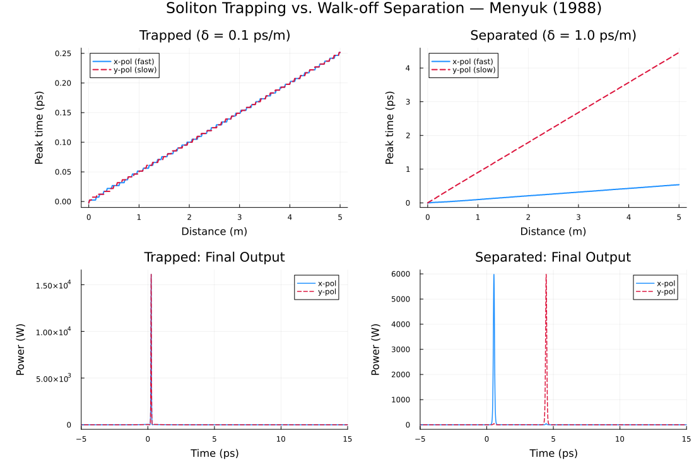

Example 4: Soliton Trapping in a Birefringent Fiber
Reproducing the polarization-locking phenomenon of Menyuk (1988)
Physical Background
In a linearly birefringent fiber, the two polarization axes (x and y) have different group velocities. A pulse launched at 45° will normally split into two temporally separated sub-pulses after a "walk-off length" $L_W = T_0 / |\delta|$, where $\delta = \beta_{1x} - \beta_{1y}$ is the group-velocity mismatch (walk-off).
Menyuk (1988) showed that above a critical power, cross-phase modulation (XPM) can overcome the walk-off: the faster and slower solitons trap each other through the XPM potential and travel together as a bound polarization pair, with the same group velocity.
The trapping condition is approximately:
\[\frac{L_D}{L_W} < \frac{\sqrt{3}}{2} \quad \Longleftrightarrow \quad |\delta| < \frac{\sqrt{3}}{2} \frac{T_0}{L_D}\]
Simulation Setup
We reproduce the trapping effect using BirefringentMedium with equal energy on both axes, comparing a walk-off below the trapping threshold against one above it. The threshold scales as $T_0/L_D$, i.e. with the soliton power: a weak, long (low-power, large-$L_D$) soliton is trapped only by walk-off values many orders of magnitude smaller than any real fiber's birefringence, so a fundamental soliton must be short/strong enough that realistic $\delta$ values (sub-ps/m to a few ps/m) actually straddle the threshold. We use a 100 fs fundamental soliton ($P_0 \approx 6.1\text{ kW}$, $L_D \approx 0.15$m), giving a threshold $|\delta| \approx 0.33$ ps/m:
using Soliton
lambda0 = 1550e-9
beta2 = -21.5e-27
gamma = 0.0011
T0FWHM = 100e-15
T0 = T0FWHM / (2 * log(1 + sqrt(2)))
P0 = abs(beta2) / (gamma * T0^2)
LD = T0^2 / abs(beta2)
threshold_ps_m = sqrt(3)/2 * (T0 / LD) * 1e12 # [ps/m]
grid = create_grid(2^13, 40e-12, lambda0)
function run_case(delta_beta1)
disp_x = TaylorDispersion([beta2], 0.0)
disp_y = TaylorDispersion([beta2], +delta_beta1)
med = BirefringentMedium(5.0, gamma, 0.0, disp_x, disp_y, 0.0, lambda0)
Ax = sech_pulse(grid, P0, T0FWHM).At
Ay = copy(Ax)
vpulse = VectorialPulse(Ax, Ay, grid)
params = SimParams(; medium=med, z_saves=300, solver=SSFM(1e-4), raman_model=nothing)
return solve(vpulse, params; progress=false)
end
vsol_trap = run_case(0.1e-12) # 0.1 ps/m: well below threshold -> trapped
vsol_sep = run_case(1.0e-12) # 1.0 ps/m: well above threshold -> separated
println("Trapping threshold: |δ| < ", round(threshold_ps_m, digits=3), " ps/m")Trapping threshold: |δ| < 0.328 ps/m
Expected Results
| Case | Walk-off $\delta$ | Behavior at $z = 5$ m |
|---|---|---|
| Trapped | 0.1 ps/m (< 0.33 ps/m threshold) | Peaks co-propagate — near-zero separation throughout |
| Separated | 1.0 ps/m (> 0.33 ps/m threshold) | Peaks diverge linearly, ≈ 3–4 ps apart |
The top row tracks each polarization's peak arrival time vs. distance directly: trapped shows two overlapping flat/co-moving lines, separated shows two diverging lines (linear walk-off). The bottom row confirms this in the final-output time-domain trace.
Effect of Δβ₀ (Phase Mismatch)
A non-zero birefringence phase mismatch deltabeta0 suppresses the coherent FWM coupling term. For $\Delta\beta_0 \gg 1/L$ the FWM term averages out and only SPM/XPM survive:
# High phase mismatch: FWM averages out
disp_x = TaylorDispersion([beta2], 0.0)
disp_y = TaylorDispersion([beta2], 0.1e-12)
med_highbire = BirefringentMedium(
5.0, gamma, 0.0, disp_x, disp_y,
1e6, # Δβ₀ = 10⁶ 1/m (beat length ~ 6 µm — very high birefringence)
lambda0,
)
Ax = sech_pulse(grid, P0, T0FWHM).At
vpulse = VectorialPulse(Ax, copy(Ax), grid)
vsol_hb = solve(vpulse, SimParams(; medium=med_highbire, z_saves=200,
solver=SSFM(1e-4), raman_model=nothing))References
C. R. Menyuk, "Stability of solitons in birefringent optical fibers. II. Arbitrary amplitudes," J. Opt. Soc. Am. B 5, 392–402 (1988). DOI: 10.1364/JOSAB.5.000392
C. R. Menyuk, "Nonlinear pulse propagation in birefringent optical fibers," IEEE J. Quantum Electron. 23, 174–176 (1987). DOI: 10.1109/JQE.1987.1073308